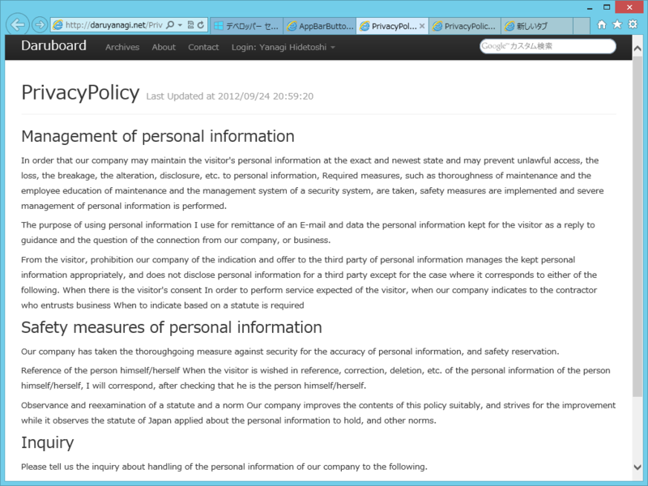
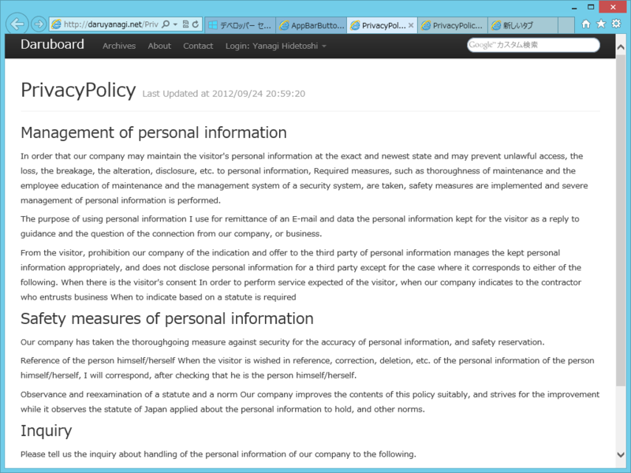

初めての Windows ストアアプリが公……うぎゃー！
公開日：

リジェクトされました ／(＾o＾)＼
くっそ……リジェクトって @daisuke_nomura 以外にも食らうのかよ……。せめて Windowsデベロッパーカンファレンス in 東京 に参加してきました - だるろぐ のあとだったらちょっとは気を付けられたと思うのだけど、しょうがない。

要約すると
- おめーのアプリ、なんだかよくわかんねぇ。役立つの？
- プライバシーポリシーつけろよ、バーカ。
- サポートの連絡先ないんですけど？ アホなの？
みたいな感じ。しょうがないので泣きながらアプリの説明ページとプライバシーポリシーのページを作成。設定チャームからリンクしておいた。
 

久しぶりに daruyanagi.net を更新したぜ……
ちなみに、ここら辺の処理は
- アプリにプライバシーポリシーをつける - がりらぼWP7 ~WindowsPhoneプログラミング情報発信ラボ~
- アプリ設定を追加する - がりらぼWP7 ~WindowsPhoneプログラミング情報発信ラボ~
をみてちょちょいのちょいと……さんきゅー @garicchi ！